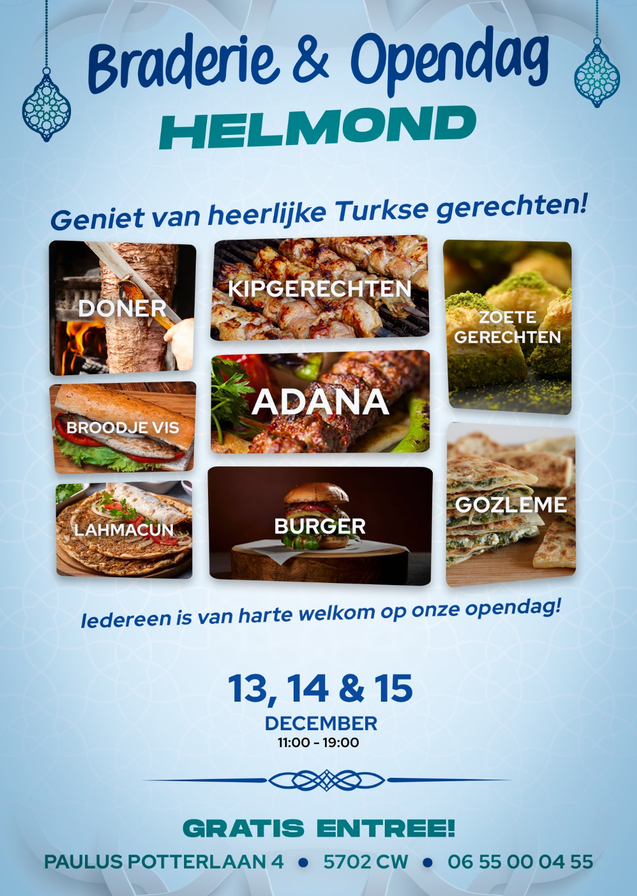

collection of the flyers I have designed

This flyer was created for the annual community event at our local mosque. The goal was to design something that felt culturally respectful and welcoming to a broad audience. I gathered feedback from community members, which helped guide important changes—like improving the clarity of event details and creating a bilingual version in Turkish and Dutch. This project showed me how design can play a role in inclusivity and how important it is to listen to the audience you're designing for.
This flyer was part of a class project for the Minor Arabic Language & Culture. Before our study trip to Morocco, we were assigned to help raise awareness and donations for a local orphanage in need of repairs—especially their bathroom facilities. I took the initiative to design the flyer, using a warm orange tone for emotional impact, and incorporating the Moroccan flag and images of the orphanage. I also added a hadith from Prophet Muhammad ﷺ about the importance of helping orphans. The flyer was shared in the Netherlands to encourage donations before our trip. It was a meaningful project that combined design, language, and purpose.

This flyer was designed to invite the local community to attend the Friday morning prayer (sabah namazı) and share a warm bowl of chicken soup together afterwards. The aim was to create a welcoming and spiritually uplifting vibe, using soft illustrations and clear typography. It highlights the community aspect of worship and the comfort of starting the blessed day of Jumu'ah in unity. This project reminded me how small design efforts can support meaningful moments of connection and faith in everyday life.